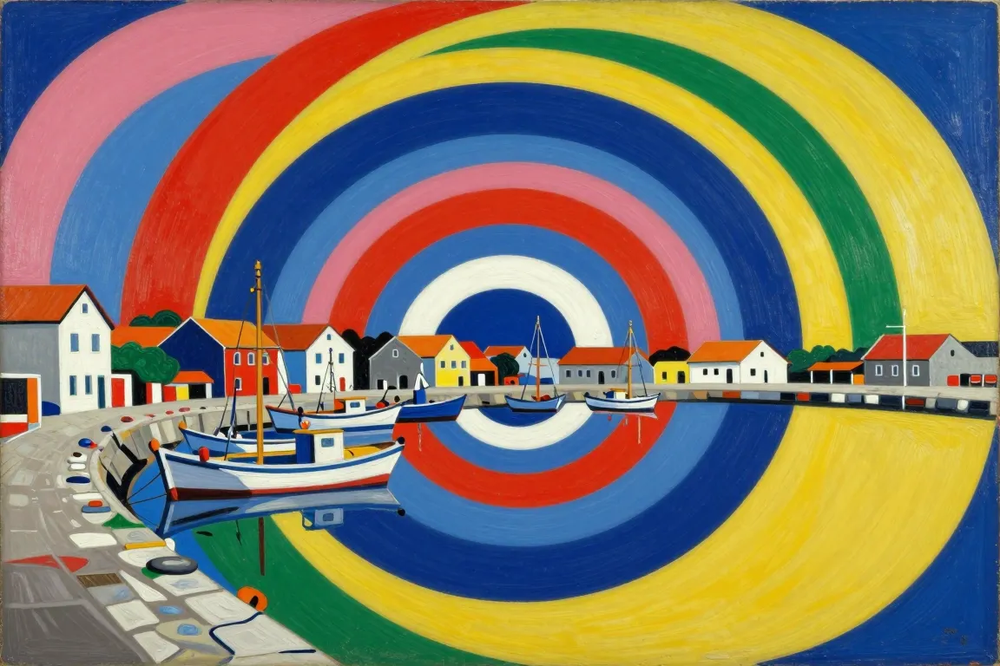

Кубистская конструкция с яркими красками фовистов, доведённая до чистой абстракции. Диски и дуги чистого цвета рядом создают ритм и свет, а предмет растворяется.

Главная идея
Один цвет способен построить форму и движение картины, поэтому художник создаёт новые целые из чистого цвета и больше не показывает предмет.
Принципы дизайна
Стройте картину из дуг и дисков чистого цвета, каждый 50–300 мм в поперечнике, в перекрывающихся кольцах.
Ставьте дополнительные цвета рядом в каждом кольце, чтобы контраст заставлял цвет вибрировать.
Разбивайте предмет на плоскости, как в кубизме, затем отбрасывайте предмет, когда цвет способен нести форму.
Повторяйте круг или дугу 5–12 раз, меняя цвет на один шаг каждый раз, чтобы дать глазу ритм.
Держите пространство неглубоким, в 2–3 слоя, и пусть диски перекрываются, чтобы казалось, что они движутся.
Берите яркий чистый цвет во всём спектре и сводите чёрный к минимуму.
Берите сюжет из современного мира, например башню, окно, город или самолёт, а затем растворяйте его.